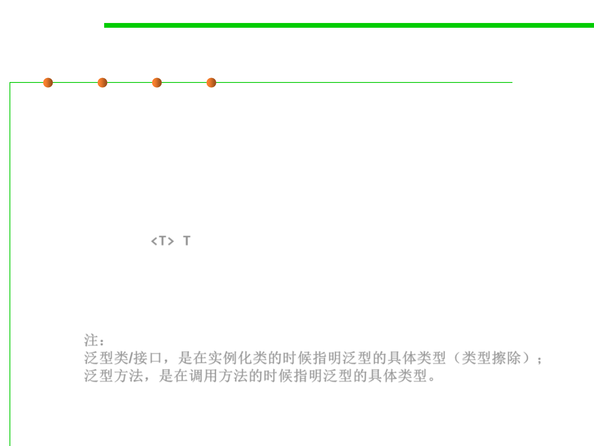

Generics in Java
3.4 Object-Oriented Programming (OOP)
▪ A method is generic if it declares one or more type variables.
– These type variables are known as the formal type parameters of the
method.
– The form of the formal type parameter list is identical to a type parameter
list of a class or interface.
public <T> T genericMethod(Class<T> tClass) {
T instance = tClass.newInstance();
return instance;
}
注：
泛型类/接口，是在实例化类的时候指明泛型的具体类型（类型擦除）；
泛型方法，是在调用方法的时候指明泛型的具体类型。